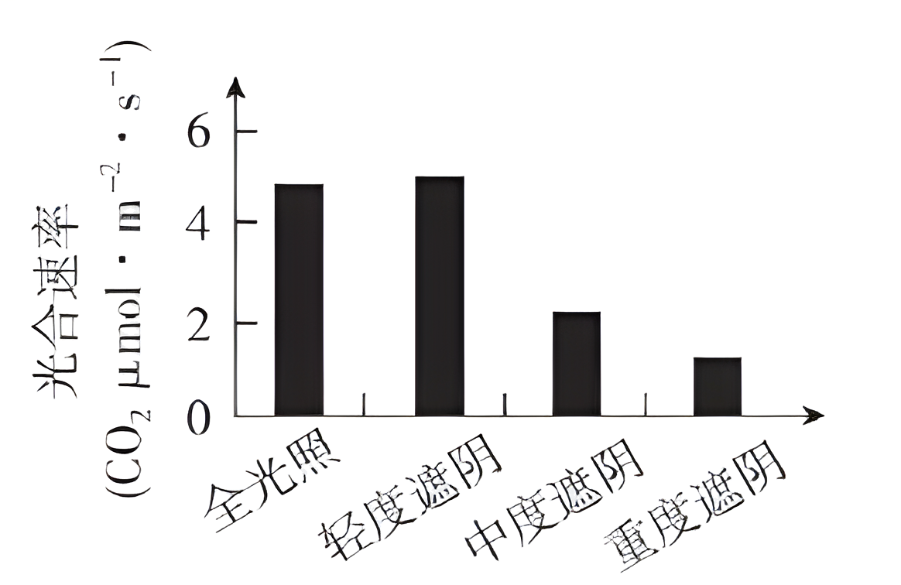
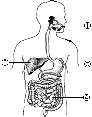
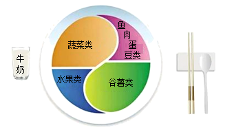

2024年北京市西城区中考生物真题 · 选择题 第6、7、8、9、10题 · 对应解析
6. 蒸腾作用是植物体重要的生理活动之一。以下相关叙述错误的是（ ）
A. 水可以通过叶片的气孔散失到大气中
B. 植物在不同条件下蒸腾速率是相同的
C. 蒸腾作用有助于降低叶片表面的温度
D. 蒸腾作用为水和无机盐运输提供动力
【答案】B
【解析】
【分析】水分从活的植物体表面以水蒸气状态散失到大气中的过程，叫蒸腾作用。蒸腾作用的主要器官是叶。蒸腾作用的“门户”是气孔，气孔是由两个呈半月形的保卫细胞围成的空腔。其意义有：促进了根部对水分的吸收及水和无机盐在体内的运输；降低了植物体尤其是叶片表面的温度，避免被高温灼伤；提高大气湿度，增加降水。
【详解】A．气孔是植物蒸腾失水的“门户”，也是气体交换的“窗口”。故水可以通过叶片的气孔散失到大气中，A正确。
B．气孔的张开和闭合可以调节蒸腾作用，使植物体内经常保持着适量的水分。而气孔的张开和闭合又受光照强度、环境温度、空气湿度、空气流动等环境因素的影响。故植物在不同条件下蒸腾速率可能不相同，B错误。
C．蒸腾作用降低了植物体尤其是叶片表面的温度，避免被高温灼伤，C正确。
D．植物的蒸腾作用在把体内的水以水蒸气的形式通过叶片的气孔蒸发到大气当中去的时候，是一种“泵”的原理。它为根吸水提供了向上的拉力，同时溶解在水中的无机盐也一同被向上运输。所以，蒸腾作用促进了水和无机盐的运输，是植物向高处运输水分和无机盐的动力，D正确。
故选B。
7. 香果树是我国特有的濒危珍稀植物，自然条件下成苗率低。为促进香果树繁育，科研人员研究不同遮阴程度对幼苗光合速率的影响，结果如图。下列相关叙述错误的是

A. 四组幼苗应置于相同环境温度下B. 光合速率受光照强度的影响
C. 轻度遮阴时幼苗释放的氧气多D. 重度遮阴条件最适宜培育幼苗
【答案】D
【解析】
【分析】绿色植物通过叶绿体利用光能，把二氧化碳和水转化成储存能量的有机物（如淀粉），并且释放出氧气的过程，叫做光合作用。光合作用受光照强度的影响，一般来说，光照强度越强，光合作用速率越强。对照实验是在研究一种条件对研究对象的影响时，所进行的除了这种条件不同外，其他条件都相同的实验，这个不同的条件，就是唯一变量。一般的对实验变量进行处理的，就是实验组，没有对实验变量进行处理的就是对照组。该实验为了研究不同遮阴程度对幼苗光合速率的影响，设置了四组个组。从实验结果可知在轻度遮阴时幼苗光合作用强度最强。
【详解】A．该对照实验中只能有一个变量（遮阴程度），其它条件应相同。这样便于排除其他条件干扰实验。因此四组幼苗应置于相同环境温度下，A正确。
B．遮阴程度影响了光照强度，从实验结果可知幼苗的光合速率受光照强度的影响，B正确。
C．从实验结果可知，轻度遮阴时幼苗光合速率最强，释放的氧气最多，C正确。
D．重度遮阴条件下，幼苗的光合速率最低，产生的有机物过少，不利于幼苗的生长，D错误。
故选D。
8. 如图是人体消化系统结构模式图。下列相关叙述错误的是

A. 脂肪可在①中初步分解
B. ②所示的消化腺可分泌胆汁
C. ③分泌的消化液含蛋白酶
D. 消化和吸收的主要场所是④
【答案】A
【解析】
【分析】本题考查消化系统的结构及功能。图中①是口腔，②是肝脏，③是胃，④是小肠。
【详解】A．①是口腔，能初步分解淀粉为麦芽糖，不能分解脂肪，A错误。
B．②是肝脏，能分泌胆汁，帮助脂肪的消化，B正确。
C．③是胃，胃内有胃腺，胃腺能分泌胃液，胃液中的胃蛋白酶能初步消化蛋白质，C正确。
D．④是小肠，小肠是消化和吸收的主要场所，D正确。
故选A。
9. 《中国居民膳食指南（2022）》通过平衡膳食餐盘（如图）宣传平衡膳食的理念。下列相关叙述错误的是

A. 肉蛋奶是人体所需能量的主要来源
B. 水果、蔬菜可提供维生素
C. 摄入食物的类别要多样
D. 摄入食物的量要适当
【答案】A
【解析】
【分析】合理营养是指全面而平衡的营养。全面是指摄取的营养素种类齐全。平衡是指摄取的各种营养素的量合适，与身体的需要保持平衡。食物主要含有糖类、脂肪、蛋白质、水、无机盐、维生素六类营养物质。
【详解】A．人体生命活动所需要的能量，主要是由糖类提供的。葡萄糖、蔗糖、淀粉等都属于糖类。奶、蛋、鱼、肉类食物含有丰富的蛋白质。蛋白质是构成人体细胞的重要物质，人的生长发育以及受损细胞的修复和更新，都离不开蛋白质，A错误。
B．维生素是一类比较简单的有机物，种类很多。它们不是构成人体细胞的主要物质，也不为人体生命活动提供能量，B正确。
C．合理营养是指全面而平衡的营养。全面是指摄取的营养素种类齐全，C正确。
D．摄取的各种营养素的量合适，与身体的需要保持平衡，D正确。
故选A。
10. 血液成分中，富含血红蛋白，具有运输氧功能的是（ ）
A. 白细胞B. 红细胞C. 血小板D. 血浆
【答案】B
【解析】
【分析】血液包括血浆和血细胞，血细胞包括红细胞、白细胞和血小板。
【详解】A.白细胞具有细胞核，能吞噬发炎部位的病菌，具有防御和保护的作用，错误。
B.红细胞富含血红蛋白，功能主要是运输氧气，还可以运输部分二氧化碳，正确。
C.血小板具有止血和加速凝血的作用，错误。
D.血浆中含有大量的水，还含有血浆蛋白、葡萄糖、氨基酸、无机盐等，能运载血细胞，运输营养物质和废物，错误。
故选B。
【点睛】解答此题的关键是掌握血液的成分及各组成的功能。